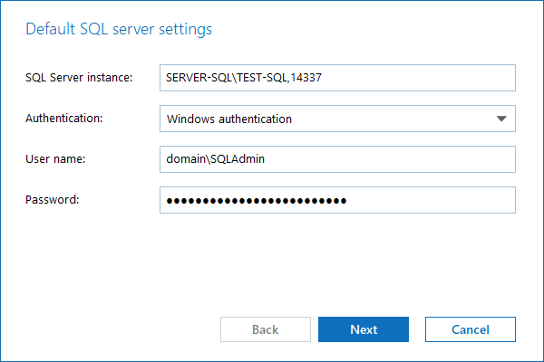

Question
How to specify a custom port for Netwrix Auditor to communicate with the SQL Server instance?
Answer
-
In the main Netwrix Auditor menu, open Settings.
-
In the left pane, select Audit Database and click Modify under Audit database settings.
-
Specify your computer and instance name, followed by a comma, and the port in the SQL Server instance field:
SERVER-SQL\TEST-SQL,14337
